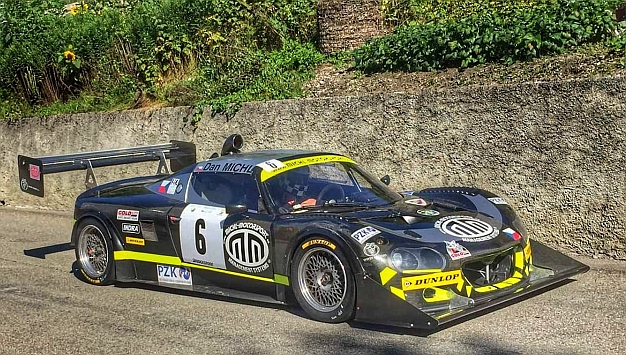
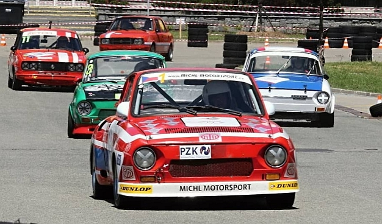

závodní vozy
Lotus Elise V8 Hartley - 430 hp / 11000 rpm / 750 kg

předchozí sezóny
DAN MICHL
Na upraveném podvozku vozu Lotus Elise je týmem Michl Motorsport (Milan Klejch, Dan Michl) vyvinutá a postavená karbonová karoserie. Motor o výkonu 450k/10000rpm má objem 2,8l a skládá se ve skutečnosti ze dvou do V složených motorů pocházejících z motocyklu Suzuki Hayabusa. Automobil váží 750kg.
Dan Michl s Lotusem Elise získal na evropských kopcích několik titulů Vítěze Trofeje FIA v kategorii 2.
Videa:
- Rechberg Rennen 2025 ZDE
- GHD Gorjanci 2024 ZDE
- Trento Bondone 2023 ZDE
- Coppa Paolino Teodori / Ascoli Piceno 2022 s drobnou kolizí se svodidly v poslední zatáčce ZDE
- Trento Bondone 2021 - mokrý závod na nejdelším evropském kopci (17,3 km) ZDE
- Ecce Homo Šternberk 2021 ZDE
- Buzetski Dani 2019 ZDE

video s pohledem do interiéru vozu ze závodu FIA Masters v roce 2014 najdete ZDE
video na YouTube kanálu Hill Climb Monsters - sestřih závodů r. 2017 najdete ZDE
JOSEF MICHL
V roce 2019 absolvoval Josef Michl sérii závodů Poháru Středoevropské zóny v závodech historických automobilů do vrchu a stal se jeho vítězem. Závodil také v Mistrovství Evropy v závodech do vrchu historických automobilů, kde dokončil sezónu na třetím místě. V průběhu sezóny jezdil v kat. 2 s vozy Porsche 911 RS a Škoda 130 RS.


video z Ecce Homo Šternberk 2019 najdete ZDE
video týmu MICHL MOTORSPORT z Ecce Homo Šternberk 2017 najdete ZDE
Více najdete na našem facebooku.